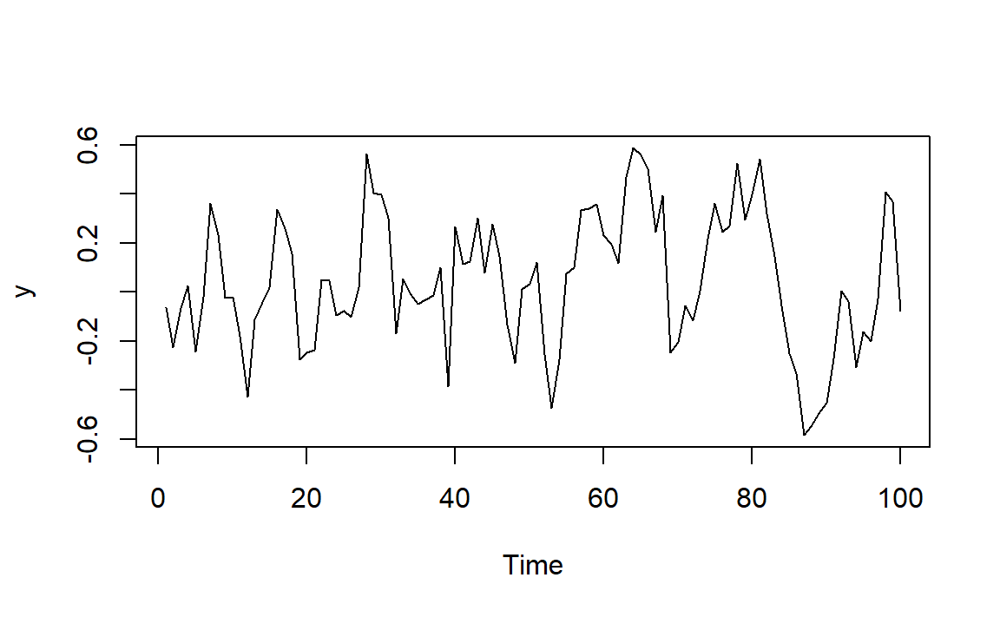
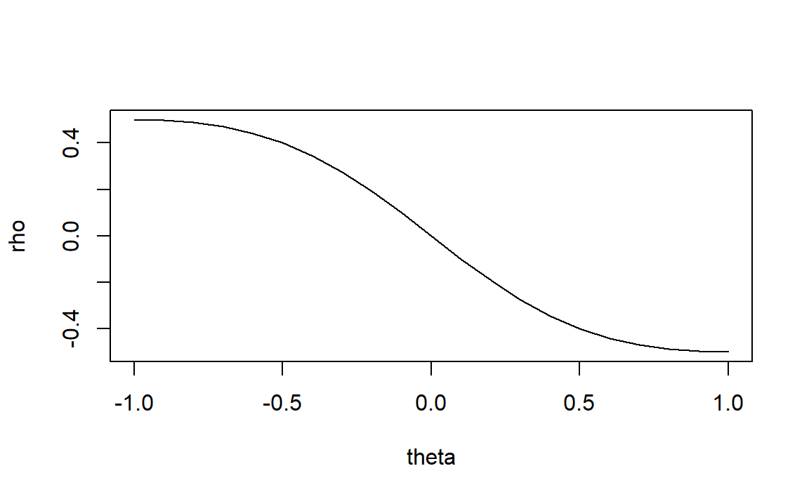
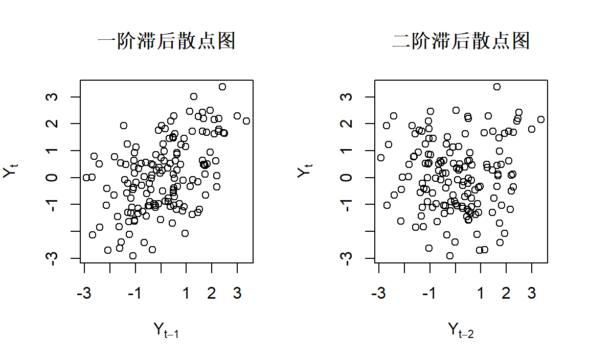

1 ARMA模型的一些图像
library(TSA)
#>
#> Attaching package: 'TSA'
#> The following objects are masked from 'package:stats':
#>
#> acf, arima
#> The following object is masked from 'package:utils':
#>
#> tar1.1 模拟ARIMA
可以使用R自带的函数arima.sim来模拟生成ARIMA模型数据。
例如AR(1):
\[ Y_t = 0.7Y_{t-1}+e_t \]

1.2 MA(q)过程
\[ Y_t = e_t+\theta_1e_{t-1}+\theta_2e_{t-2}+\cdots+\theta_qe_{t-q} \]
1.2.1 MA(1)
模型表达： \[ Y_t = e_t+\theta e_{t-1} \]
统计特性： \[ \gamma_0=\sigma_e^2(1+\theta^2),\quad \gamma_1 = -\theta\sigma_e^2,\quad \gamma_k=0(k\ge2) \]
\[ \rho_1=(-\theta)/(1+\theta^2),\quad \rho_k=0(k\ge2) \]
不同\(\theta\)下MA(1)的一阶滞后自相关函数：

图1.1: 不同theta下MA(1)的一阶滞后自相关函数
1.2.1.1 举例1
\[ Y_t = e_t+0.9 e_{t-1} \]
模拟时间序列图：

由1.1，当\(\theta\)接近1，一阶自相关系数\(\rho_1\)接近0.5，表示存在中等强度的正相关，如果一个观测值高于平均值，那么下一个观测值一般也会高于平均值，图形随时间变化比较平缓，只是偶尔有比较大的波动。